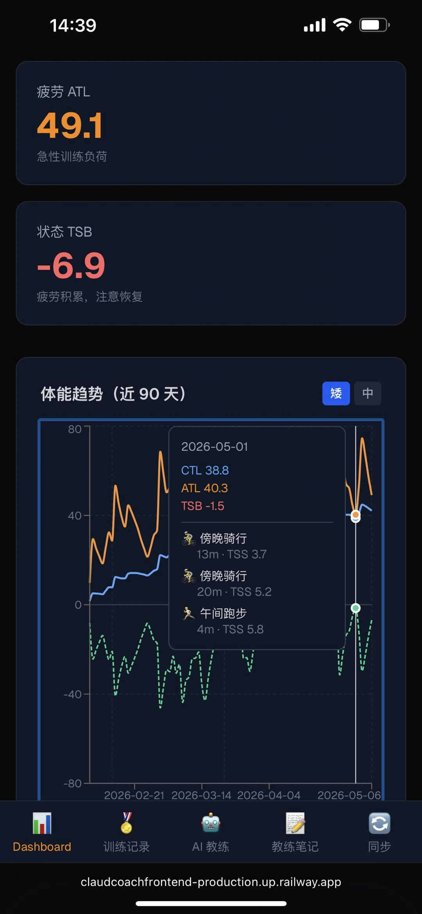
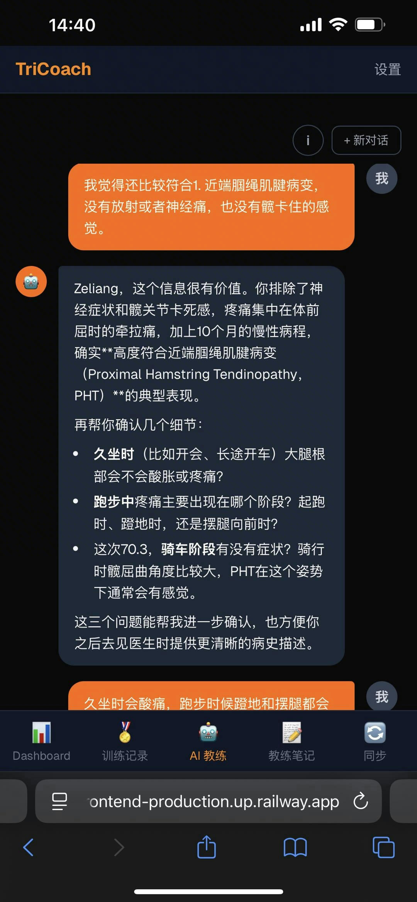
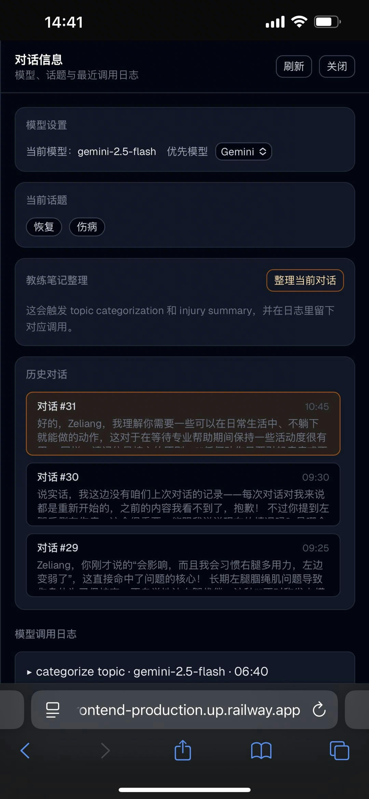
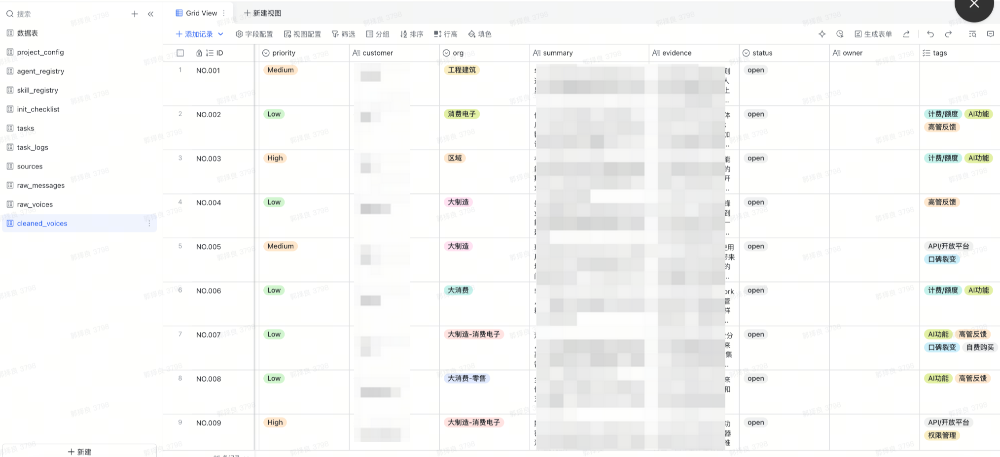

我做 AI 项目时，最关心的不是模型能不能回答问题，而是人和 Agent 如何在真实场景里分工、接力、形成长期协作。
无论是面向个人训练与伤病恢复的 TriCoach，还是面向组织反馈流转的 VOC Agents，我想探索的其实是同一个问题：哪些事情适合交给 Agent 承接， 哪些判断需要由人保留，以及两者如何围绕同一份上下文持续配合。
我希望做的，不只是更聪明的 AI，而是真正能与人协作、沉淀上下文并持续创造价值的产品。
一个连接 Strava 的 AI 铁三教练系统。它不是简单分析运动数据，而是把训练同步、 体能指标、对话复盘、教练人设和长期记忆连接成一个持续协作体验。



通过 Strava OAuth 接入训练数据，用户不用手动维护训练记录。
用 CTL / ATL / TSB、阈值和近 7 天训练作为教练判断上下文。
每次训练后主动收集训练类型、RPE、身体状态和生活干扰，不把交互做成生硬填表。
把对话沉淀成训练笔记、周总结、月总结和赛季总结，让教练具备可被后续多层调用的连续理解。
一个从飞书群聊自动采集用户反馈、经 AI 清洗后写入 Lark Base 的多 Agent 系统。 它最有价值的地方，不是“识别反馈”本身，而是把采集、清洗、分析、报告做成了一条可重复运行的工作流。
Project Lark 群（通信总线） ├── 任务发布 → Human 在群里发消息 @ Agent ├── Agent 接收 → OpenClaw 监听群 chat_id，@ 触发对应 skill ├── 任务结果 → Agent 写 Lark Base + 群里广播 └── 关键事件 → Platform Bot 广播到群 Lark Base（数据与配置中心） ├── 配置层：project_config / agent_registry / skill_registry / init_checklist ├── 任务层：tasks / task_logs ├── 数据层：raw_messages / raw_voices / cleaned_voices └── 产出层：demands / outputs OpenClaw Agent（每个 Agent 独立 Lark 身份） ├── channel: project_group_chat_id ├── trigger: @ pattern（@Cleaner、@Analyst...） └── system_prompt: 通用 skill + 角色 skill（初始化时 human_master 指令注入）

一条命令完成环境检查、反馈群选择、Base 创建和角色数据写入。
Collector 拉消息，Cleaner 清洗为结构化事实，Analyst 基于事实层生成报告和洞察。
以 cleaned_voices 作为共享公共事实，后续分析建立在稳定底层之上。
把首轮可用体验拆成“初始化项目”和“拿到第一份报告”两段，减少首次使用负担。
这两个项目表面上一个偏个人应用，一个偏组织工作流，但它们背后其实是同一套方法： 找真实问题，拆成能被 Agent 承接的步骤，再设计人机边界和可持续使用方式。
我不是从已有方案里选功能，而是先看真实流程里最值得被重做的那一段，再反推产品形态。
我更关注上下游如何接住，而不是只做中间那一段智能。好的 Agent 必须接得上真实流程。
项目能不能被别人真的用起来，往往取决于接入成本、默认路径和第一次成功体验。
记忆不是多存一点上下文，而是把对话沉淀为后续可调用的结构化经验，服务长期任务而不是单轮问答。
在 VOC Agents 里，我会优先稳住事实层和角色边界，因为没有稳定结构，Agent 协作很快会失真。
我在意的不是“这个东西像不像 AI”，而是“它有没有把某项工作真的变得更简单、更快、更可持续”。